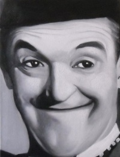

| | | |
|  | | | |
| Stanlio i Olio (eng. Laurel and Hardy) su bili američki komičarski par koji su činili britanac Sten Lorel (1890-1965) i amerikanac Oliver Hardi (1892-1957). Popularnost su stekli početkom dvadesetog stoljeća zahvaljujući radu na filmu, ali takođe i glumom u kazališnim predstava diljem Amerike i Europe. Ovaj dvojac se smatra jednim od najboljih i najpoznatijih u povijesti filma. |
| Stanlio i Olio (eng. Laurel and Hardy) su bili američki komičarski par koji su činili britanac Sten Lorel (1890-1965) i amerikanac Oliver Hardi (1892-1957). Popularnost su stekli početkom dvadesetog stoljeća zahvaljujući radu na filmu, ali takođe i glumom u kazališnim predstava diljem Amerike i Europe. Ovaj dvojac se smatra jednim od najboljih i najpoznatijih u povijesti filma. |